പ്രകൃതിയുടെ സൗμ-ര്യസ്ഥിന് മാ‰ുകൂന്തുന്നത് ജീവിക-ളുടെ സാന്നിധ്യവും വൈവിധ്യവുമാണ്. ജീവരൂപ-ത്മƒ വ്യത്യസ്തത്മളാണെന്നിലും പ്രകൃതിയിൺ ഒരു ജീവിയും ഒ‰∏െന്ത√ നിലനിൺത്ഥുന്നത്. ചിത്രീക-രണം നിരീക്ഷിണ്ണ് ജീവികƒ തΩിലു≈ പരസ്പരാശ്രയത്വസ്ഥിന് ഉദാഹ-രണത്മƒ ക≠െസ്ഥൂ.
Page 21
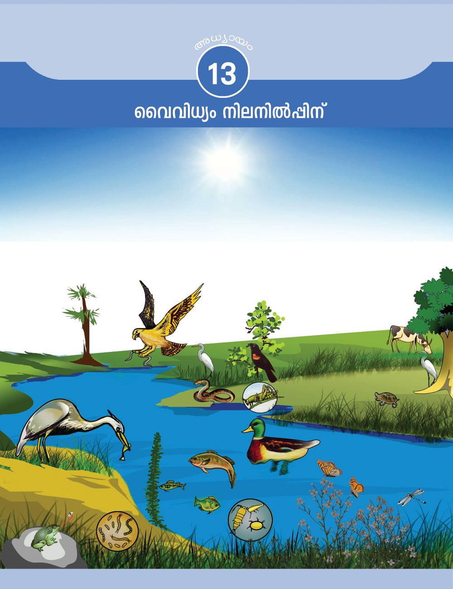
Page 22

ജീവമ-fi-ലം (ആശീുെവലൃല) ജഗ്ലുത്ഥളും സസ്യത്മളും സൂക്ഷ്മജീവികളും എ√ാം ഉƒ∏െടുന്ന ജീവലോക-സ്ഥി‚െ നിലനി-ൺ∏ിന് അജീവീയ-ഘട-കത്മളും ആവശ്യമാണ്. ഭൂമിയിൺ ജീവ≥ കാണ-∏െഅജീവീയഘടക-ത്മƒ ജീവീയഘടക-ത്മƒത്ഥ് പ്രയോജ-നക-രമാകുന്നടുന്ന ഭാഗമാണ് ജീവമ-fi-ലം. ഇത് ഭൗമോപ-രിത-ലസ്ഥിലും തെത്മനെയെ-√ാമാണ്? ചയ്യണ്ണചെøൂ. അഗ്ലരീക്ഷസ്ഥിലും സമുദ്ര- ചുവടെ നൺകിയ ചിത്രീക-രണം ഉചിത-മായി പൂയ്യസ്ഥിയാത്ഥൂ. സ്ഥിന-ടിയിലുമായി വ്യാപിണ്ണുകിടത്ഥുന്നു. സൂര്യപ്രകാശം (പ്രകാശ-സംട്ടേഷണം)
മവ്വ് (.........................)
അജീവിയ -ഘട-കത്മƒ
വായു (.......................)
ജലം (.......................) ചിത്രീക-രണം 13.1
ജീവലോക-സ്ഥി‚െ പ്രാഥമിക ഊയ്യജസ്രോത ് സൂര്യനാണ്. ഹരിതസ- സ ്യ- ത്മ ƒ പ്രകാ- ശ - സ ം- ഏട്ട- ഷ - ണ - സ്ഥ ഇ- ല ഊടെ പ്രകാ- ഏശായ്യജസ്ഥെ രാസോയ്യജമാത്ഥി മാ‰ുന്നു.
ഇത്ഥോളജി (ഋരീഹീഴ്യ) ജീവജാല-ത്മƒ തΩിലും ജീവജാല-ത്മളും അവയുടെ ചു‰ുപാടും തΩിലുമു≈ പരസ്പരബ-'-സ്ഥെത്ഥുറിണ്ണു≈ പഠനമാണ് ഇത്ഥോളജി. വിവിധതരം ആവാസവ്യവ-ÿകƒ, ജീവികƒ തΩിലു≈ ബ-'-ത്മƒ, പരി-ÿിതിസംരക്ഷണം എന്നിവയെ√ാം ഈ പഠന-ശാഖ-യിലുƒ∏െടുന്നു.
182 അടി-ÿാന-ശാസ്ത്രം ഢകകക
ഈ ഊയ്യജമാണ് ഭക്ഷ്യശൃംഖല വഴി കൈമാ‰ം ചെø-∏െന്ത് മ‰ു ജീവികളിലെസ്ഥുന്നത്. പ്രകാശ-സംട്ടേഷണം നടസ്ഥുന്ന സസ്യത്മളെ ഉൺ∏ാദ-കയ്യ (ജൃീറൗരലൃ)െ എന്നും നേരിന്തോ അ√ാതെയോ ഊയ്യജസ്ഥിനായി സസ്യത്മളെ ആശ്രയിത്ഥുന്ന മ‰ു ജീവികളെ ഉപഭോ-‡ാത്ഥƒ (ഇീിൗൊലൃ)െ എന്നും വിളിത്ഥുന്നു. നേരിന്ത് സസ്യത്മളെ ആശ്രയിത്ഥുന്ന ഉപഭോ-‡ാത്ഥളെ പ്രാഥമിക ഉപഭോ-‡ാത്ഥƒ എന്നും അവയെ ആഹാരമാത്ഥുന്നവയെ ദ്വിതീയ ഉപഭോ-‡ാത്ഥളെന്നും പറയാം. ദ്വിതീയ ഉപഭോ-‡ാത്ഥളെ ഭക്ഷിത്ഥുന്നവ-രാണ് തൃതീയ- ഉപ-ഭോ-‡ാത്ഥƒ. പ്രകൃ- ത ഇ- യ ഇലെ ആഹാ- ര - ബ - ' - ത്മ ƒ ചിത്രീ- ക - ര ഇ- ത്ഥ ഉന്ന ഭക്ഷ്യശൃംഖലാജാലം (ളീറ ംലയ) മുബ്ബ് പരിച-യ-∏െന്തിന്തു-≠-√ോ. ഒരു ഭക്ഷ്യശൃംഖ-ലാജാല-സ്ഥി‚െ ചിത്രീക-രണം നിരീക്ഷിത്ഥൂ. നൺകിയിരിത്ഥുന്ന സൂചക-ത്മƒ ഉപയോഗിണ്ണ് ചയ്യണ്ണചെയ്ത് നിഗമ-നത്മƒ എഴുതൂ.
Page 23

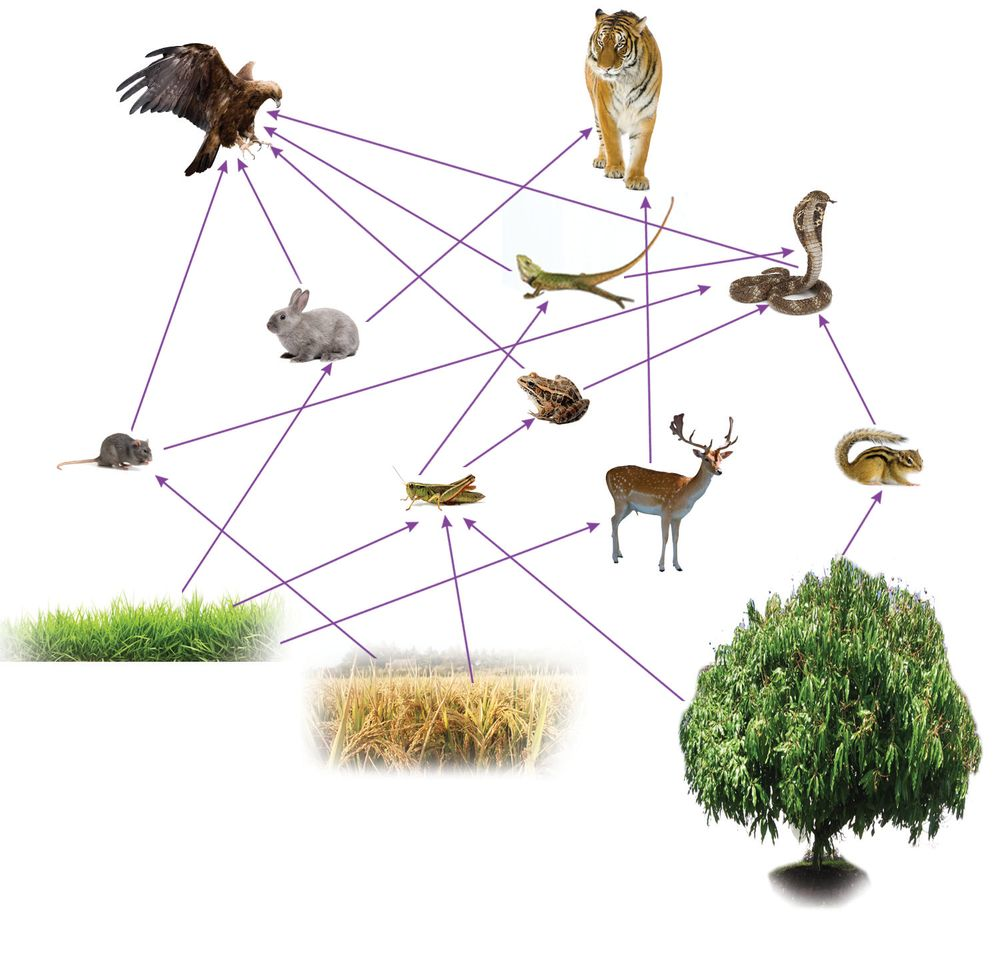
ചിത്രീക-രണം 13.2
സൂചക-ത്മƒ $
ഭക്ഷ്യശൃംഖ-ലയും ഭക്ഷ്യശൃംഖ-ലാജാലവും എത്മനെ വ്യത്യാസ-∏െന്തിരിത്ഥുന്നു?
$
ഒരു ജീവിതന്നെ ഒന്നിലേറെ ഭക്ഷ്യശൃംഖ-ലക-ളിലുƒ∏െടുന്നു≠ോ?
$
- ഒ രു ജീവിതന്നെ ഒന്നി- ഏലറെ ജീവി- ക ƒത്ഥ് ആഹാ- ര - മ ആ- ക ആ- ന ഉ≈ സാധ്യത ഭക്ഷ്യശൃംഖ-ലാജാലസ്ഥി‚െ നിലനിൺ∏ിന് ഗുണക-രമാണോ? എഗ്ലുകൊ≠്?
$
ഭക്ഷ്യശൃംഖ-ലാജാല-സ്ഥിൺ കവ്വിയായ ഏതെന്നിലും ജീവിയുടെ എവ്വസ്ഥിലു-≠ാകുന്ന ഏ‰-ത്ഥുറ-ണ്ണിലുകƒ മ‰ു- ജീവിക-ളുടെ നിലനിൺ∏ിനെ എത്മനെ ബാധിത്ഥും?
അടി-ÿാന-ശാസ്ത്രം ഢകകക 183
Page 24

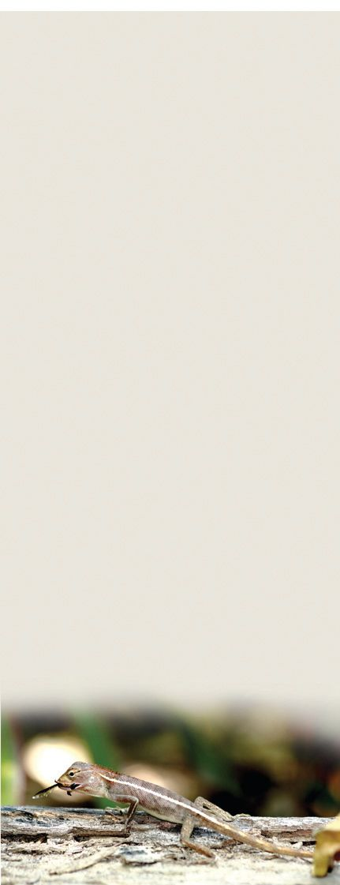
പോഷണ-തല-ത്മƒ (ഠൃീുവശര ഘല്ലഹ) ഭക്ഷ്യശൃംഖ-ലയിലെ ഒരു ജീവിയുടെ ÿാനസ്ഥെത്ഥുറിത്ഥുന്ന പദമാണ് പോഷണ-തലം. ഭക്ഷ്യശൃംഖ-ലകƒ ആരംഭിത്ഥുന്നത് സസ്യത്മളിൺനിന്ന് ആകയാൺ അവയെ ഒന്നാം പോഷണ-തലസ്ഥിൺ പെടുസ്ഥാം. സസ്യത്മളിൺനിന്നു നേരിന്ത് പോഷണം സ്വീക- ര ഇ- ത്ഥ ഉന്ന സസ്യാ- ഹ ആ- ര ഇകളെ ര≠ാം പോഷണ- ത - ല സ്ഥിലും പോഷ- ണ - സ്ഥ ഇ- ന ആയി അവയെ ആശ്രയിത്ഥുന്ന മാംസാഹാരികളെ മൂന്നാം പോഷണ-തലസ്ഥിലും പെടുസ്ഥാം. മാംസാഹാരികളെ ഇരയാത്ഥുന്ന ഇരപിടിയ-∑ാരാണ് നാലാം പോഷണതല-സ്ഥിൺ ഉ≈-ത്. ഭക്ഷ്യശൃംഖലാജാലം സന്നീയ്യണമാകുന്നതനു- സ - ര ഇണ്ണ് ഒരു ജീവി- ത ന്നെ വിവിധ പോഷ- ണ - ത - ല - ത്മ - ള ഇൺ ഉƒ∏െടാം.
പോഷണ-തല-സ്ഥെത്ഥുറിണ്ണു≈ കുറി∏് വായിണ്ണ-√ോ. ഭക്ഷ്യശൃംഖലാജാലസ്ഥിലെ ജീവികളെ വിവിധ പോഷണ-തലത്മളിലുƒ∏െടുസ്ഥി നൺകിയ ചിത്രീകരണം പൂയ്യസ്ഥിയാത്ഥൂ. ത്രിതീയ ഉപഭോ-‡ാത്ഥƒ (മാംസാഹാരികളെയും ഭക്ഷിത്ഥുന്നവയ്യ)
.......................................................
നാലാമസ്ഥെ പോഷണ-തലം
ദ്വിതീയ ഉപഭോ-‡ാത്ഥƒ (മാംസാഹാരികƒ) മൂന്നാമസ്ഥെ പോഷണ-തലം
.......................................................
പ്രാഥമിക ഉപഭോ-‡ാത്ഥƒ (സസ്യാഹാരികƒ) ര≠ാമസ്ഥെ പോഷണ-തലം
.......................................................
ഉൺ∏ാ- ദ കയ്യ (സസ്യത്മƒ) ഒന്നാമസ്ഥെ പോഷണ-തലം
നെൺണ്ണെടി, പുൺണ്ണെടി .......................................................
ചിത്രീക-രണം 13.3
സൂചക-ത്മƒ $ $ $
ഒരേ ജീവിതന്നെ ഒന്നിൺത്ഥൂടുതൺ പോഷണ-തല-ത്മളിൺ ഉƒ∏െടുന്നു≠ോ? അഞ്ചാമത് പോഷണ-തല-സ്ഥിന് സാധ്യത-യു≠ോ? പോഷണ-തല-സ്ഥിലെ ഉന്നതശ്രേണിയിൺ ജീവികƒ ഇ√ാതാകുന്നത് ആവാസ-വ്യവ-ÿയെ എത്മനെ ബാധിത്ഥും?
ചിത്രീക-രണം 13.2 ൺ നിന്നെടുസ്ഥ് എഴുതിയിരിത്ഥുന്ന ഭക്ഷ്യശൃംഖല-കƒ പരിശോധിത്ഥൂ. 1.
പുൺണ്ണെടി മുയൺ പരുഗ്ല്
2.
പുൺണ്ണെടി പുൺണ്ണാടി ഓഗ്ല് പരുഗ്ല്
3.
പുൺണ്ണെടി പുൺണ്ണാടി തവള പാബ്ബ് പരുഗ്ല്
ഈ ശൃംഖല-കളിൺ പരുഗ്ല് പ്രതിനിധാനം ചെøുന്ന പോഷണതല-ത്മƒ ക≠െസ്ഥി ശാസ്ത്രപുസ്തക-സ്ഥിൺ എഴുതൂ. ആവാസ-വ്യവ-ÿ-യിലെ പോഷണ-തല-ത്മളുടെ എവ്വവും പോഷണതല--സ്ഥിലെ ജീവിക-ളുടെ ÿാനവും ÿിരമ-√. ഭക്ഷ്യശൃംഖലയുടെ സന്നീയ്യണതയ്ത്ഥും ദൈയ്യഘ്യസ്ഥിനും അനുസ-രിണ്ണ് അത് മാറിത്ഥൊ-≠ിരിത്ഥും.
184 അടി-ÿാന-ശാസ്ത്രം ഢകകക
Page 25

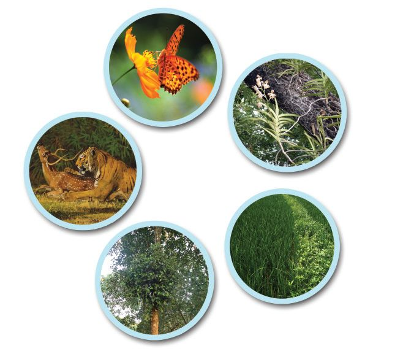

ആവാസ-വ്യവ-ÿ-യിലെ പ്രതിവയ്യസ്ഥന-ത്മƒ (ഋരീഹീഴശരമഹ കിലേൃമരശേീി)െ ജീവിബ'-ത്മളുടെ ചിത്രീക-രണം നിരീക്ഷിത്ഥൂ. കഠ @ ടരവീഹ ഋറൗയൗിൗേ വിൺ ടരവീഹ ഞലീൗൃരല എലെ "ജീവിബ-'-ത്മƒ' എന്ന ഭാഗം കാണുക.
പൂവും പൂബ്ബാ-‰യും
മാവും മരവാഴയും മാനും കടുവയും
നെ√ും കളകളും
മാവും ഇസ്ഥിƒത്ഥവ്വിയും
ചിത്രീക-രണം 13.4
ജീവിബ-'-ത്മƒത്ഥ് ഉചിത-മായ ഉദാഹ-രണ-ത്മƒ എഴുതി ചുവടെ നൺകിയ ചിത്രീകരണം പൂയ്യസ്ഥിയാത്ഥൂ.
ജീവിബ-'-ത്മƒ
പരാദ-ജീവനം ഇരപിടിസ്ഥം ഒന്നിന് ഗുണകരം, ഒന്നിന് ഗുണക-രം, മ‰േതിനു ദോഷകരം. മ‰േതിനു ദോഷകരം. ഇര- പരാദം പോഷണ-സ്ഥിഇരപിടിയന് ഭക്ഷ- നായി ആതിഥേയനെ ആശ്രയിത്ഥുന്നു. ണമാകുന്നു.
മ'രം തുടത്ഥസ്ഥിൺ ര≠ിനും ദോഷകരം, പിന്നീട് ജയിത്ഥുന്നവയ്ത്ഥു ഗുണകരം.
ഉദാ: ..............................
ഉദാ: ഉദാ: .............................. .............................
ഉദാ: മാവും ഇസ്ഥിƒത്ഥവ്വിയും
മ്യൂച്വലിസം ര≠ു ജീവികƒത്ഥും ഗുണകരം.
കമെ≥സലിസം ഒന്നിന് ഗുണകരം, മ‰േതിന് ഗുണമോ ദോഷമോ ഇ√.
ഉദാ: മാവും മരവാഴയും
ചിത്രീക-രണം 13.5
നാം കാണാസ്ഥതും അറിയാസ്ഥതുമായ നിരവധി പ്രതിവയ്യസ്ഥന-ത്മƒ പ്രകൃതിയിലു-≠്. ഈ പ്രതിവയ്യസ്ഥന-ത്മളാണ് ആവാസ-വ്യവ-ÿ-യുടെ സഗ്ലുല-നവും ÿിരതയും നിലനിയ്യസ്ഥുന്നത്. ആഹാര-ബ-'ത്മƒ ജീവികƒ തΩിലു≈ പ്രതിവയ്യസ്ഥനത്മƒത്ഥ് പ്രത്യക്ഷ ഉദാഹ-രണ-ത്മളാണ്.
അടി-ÿാന-ശാസ്ത്രം ഢകകക 185
Page 26

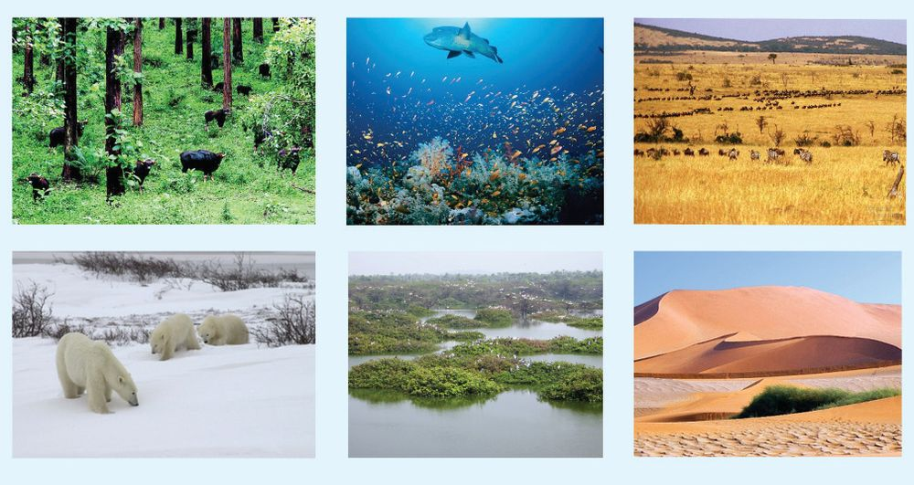
അജീവീയഘ-ടകത്മളുടെയും ജീവീയ പ്രതിവയ്യസ്ഥന-ത്മളുടെയും വൈവിധ്യം ഏറുംതോറും ആവാസ-വ്യവÿ കൂടുതൺ സുÿിര-മായി മാറുന്നു.
വൈവിധ്യമായ്യന്ന ആവാസവ്യവ-ÿ-കƒ ചുവടെ കൊടുസ്ഥ ചിത്രത്മƒ നിരീക്ഷിത്ഥൂ.
വനം
സമുദ്രം
പുൺമേടുകƒ
തുμ്ര
തവ്വീയ്യസ്ഥടം
മരുഭൂമി
ചിത്രം 13.1
വിവിധ ആവാസ-വ്യവ-ÿക-ƒ
ഈ ആവാസ-വ്യവ-ÿ-കളുടെ പ്രതേ്യക-തക-ളെത്ഥുറിണ്ണും അവയിലുƒ∏െന്ത ജീവികളെത്ഥുറിണ്ണും വിവര-ത്മƒ ശേഖരിണ്ണ് സൂചക-ത്മളുടെ അടിÿാന-സ്ഥിൺ ചയ്യണ്ണ ചെയ്ത് ശാസ്ത്രപുസ്തക-സ്ഥിൺ എഴുതൂ.
ജൈവവൈവിധ്യം (ആശീറശ്ലൃശെ്യേ) ഭൂമിയിൺ വസിത്ഥുന്ന വൈവിധ്യമായ്യന്ന മുഴുവ≥ ജീവസമൂഹ-ത്മളും അവയുടെ ആവാസവ്യവ-ÿ-കളും ചേരുന്നതാണ് ജൈവവൈവിധ്യം. ജൈവവൈവിധ്യസ്ഥിൺ ആവാസവ്യവ-ÿ-കളുടെ വൈവിധ്യം (ഋരീ്യെലേൊ റശ്ലൃശെ്യേ), സ്പീഷിസുക-ളുടെ വൈവിധ്യം (ടുലരശല എറശ്ലൃശെ്യേ), ജനിതകവൈവിധ്യം (ഏലിലശേര റശ്ലൃശെ്യേ) എന്നീ തലത്മƒ ഉƒ∏െടും. ജീവമfi-ലസ്ഥിലെ ജൈവസബ്ബന്നത സൂചി-∏ിത്ഥുന്ന ഈ പദം ആദ്യമായി ഉപയോഗിണ്ണത് 1985ൺ വാƒന്തയ്യ ജി. റോസ≥ എന്ന ബ്രിന്തീഷ് പ്രകൃതിശാസ്ത്ര-⁄നാണ്.
സൂചക-ത്മƒ $
എ√ാ ആവാ- സ - വ ്യ- വ - ÿ - ക ളും ജൈവസബ്ബ- ന്ന തയിൺ ഒരേ- ഏപാ- എലയാണോ?
186 അടി-ÿാന-ശാസ്ത്രം ഢകകക
Page 27


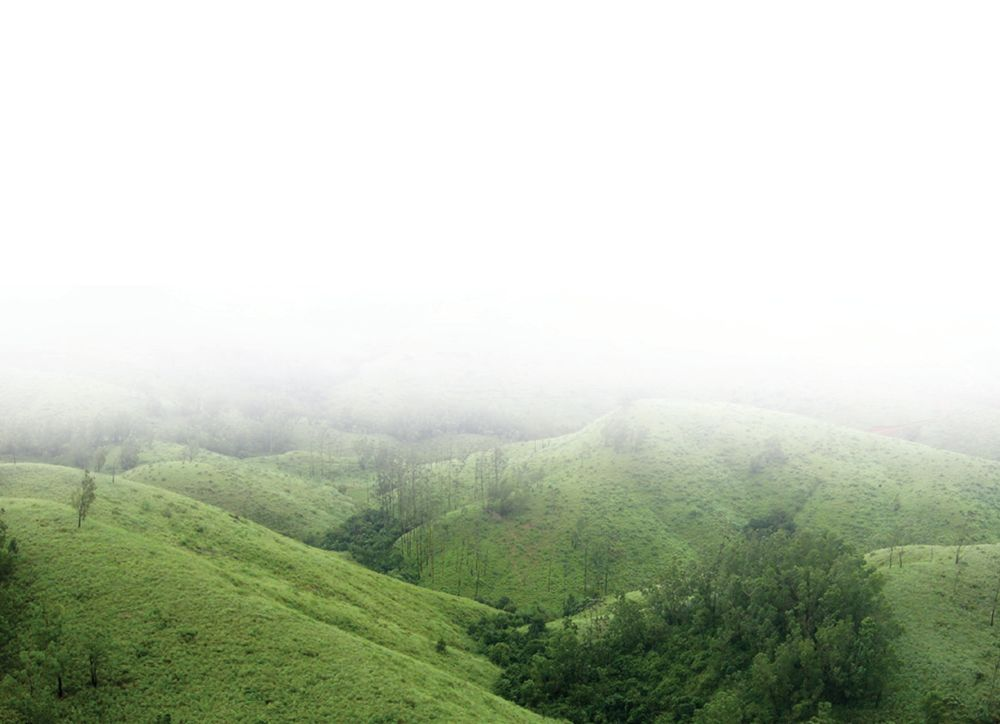
$
ഒരു ആവാസ-വ്യവ-ÿ-യിൺ കാണ-∏െടുന്ന എ√ാ ജീവികളും മ‰ൊരാവാസവ്യവ-ÿ-യിൺ കാണ-∏െടുമോ?
$
സ്വാഭാവിക ആവാസവ്യവ-ÿ-കളുടെ സംരക്ഷണ-സ്ഥി‚െ ആവശ്യകത എഗ്ലാണ്?
ജൈവവൈവിധ്യസ്ഥി‚െ പ്രാധാന്യം ജൈവവൈവിധ്യം സംരക്ഷിത്ഥുന്നതുകൊ-≠ു≈ പ്രയോജ-നത്മƒ എഗ്ലെ-√ാമാണ്? അത് മന- ഇലാത്ഥണമെന്നിൺ ജൈവവൈവിധ്യം നമുത്ഥു നൺകുന്ന സേവനത്മƒ എഗ്ലെ-√ാമാണെന്ന് തിരിണ്ണറിയ-ണം. ചുവടെ നൺകിയ ചിത്രീകരണം നിരീക്ഷിത്ഥൂ. ചിത്രീക-രണ-സ്ഥി‚െ അടി-ÿാന-സ്ഥിൺ ജൈവവൈവിധ്യ സംരക്ഷണസ്ഥി‚െ ആവശ്യക-തയെത്ഥുറിണ്ണ് കുറി∏് തയാറാത്ഥൂ.
അവശ്യവ-സ്തുത്ഥളുടെ ലഭ്യത $ ഭക്ഷണം $ മരുന്ന് $ ഇ'-നത്മƒ $ നിയ്യമാണ-വസ്തുത്ഥƒ $
കഠ @ ടരവീഹ ഋറൗയൗിൗേ വിൺ ടരവീഹ ഞലീൗൃരല എലെ "ജൈവവൈവിധ്യം ഇന്നലെ, ഇന്ന്, നാളെ' എന്ന ഭാഗം കാണുക.
സാംസ്കാരിക -സേവ-നത്മƒ
പാരി-ÿിതിക സേവന-ത്മƒ
$ സൗμ-ര്യാസ്വാദനം $ വിനോദ-ത്മƒ $ പഠനം $ ആചാരാനുഷ്ഠാന-ത്മƒ $
$ മവ്വുരൂപീക-രണം $ മവ്വൊലി∏ു തടയൺ $ ഛ2 - ഇഛ2 സഗ്ലുലനം $ ശു≤-ജല ലഭ്യത $ വെ≈-∏ൊത്ഥനിയഗ്ല്രണം $ കാലാവÿാനിയഗ്ല്രണം $
ജൈവവൈവിധ്യം-˛ സേവന-ത്മƒ
സഹായസേവ-നത്മƒ $ പോഷകചംക്രമണം $ പരാഗണം $ ജൈവനിയഗ്ല്രണം $ വിസ്ഥുവിതരണം $ ചിത്രീക-രണം 13.6
അടി-ÿാന-ശാസ്ത്രം ഢകകക 187
Page 28

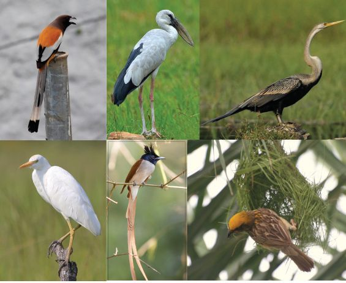
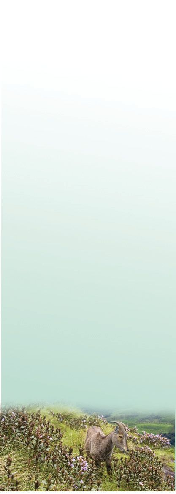

ജൈവവൈവിധ്യശോഷണം നമുത്ഥു ചു‰ുമു≈ ജൈവവൈവിധ്യസ്ഥിന് എഗ്ലാണ് സംഭവിണ്ണുകൊ-≠ിരിത്ഥുന്നത്? ഇതു- മന- ഇലാത്ഥണ-മെന്നിൺ സൂക്ഷ്മമായ നിരീക്ഷണം ആവശ്യമാണ്.
പ›ിമ-ഘന്തസ്ഥിലെ ജൈവവൈവിധ്യം ഭീഷണിയിൺ
അറബിത്ഥട-ലിനു സമാഗ്ലര-മായി 1500 എ√ാ പ്രദേശസ്ഥും കാണ-∏െടുന്നവ-യാണ√ോ പക്ഷികƒ. കിലോ- മ ഈ- ‰ - റ ഇ- ഏലറെ ദൈയ്യഘ്യവും ആവാസ-വ്യവ-ÿയിലെ മാ‰-ത്മƒത്ഥ് അതിവേഗം ഇരയാകുന്ന ഒന്നേകാൺ ലക്ഷസ്ഥില-ധികം ചതുജീവിവിഭാഗ-മാണ് പക്ഷികƒ. രശ്ര കിലോമീ-‰യ്യ വിസ്തൃതിയുമു≈ നΩുടെ പ്രദേശസ്ഥെ പക്ഷികളെ നിരീക്ഷിണ്ണാലോ? അതു- എ എജ വ - എ എവ - വ ഇ ധ ്യ സ ബ്ബ - ന്ന - മ ആ യ വഴി ജൈവവൈവിധ്യസ്ഥി‚െ നിലവിലെ അവ-ÿ- മന- ഇ- പ്രദേശമാണ് പ›ിമ-ഘന്തം (ണലലേെൃി ഴവമ)െേ . സഹ്യ- പ യ്യവ- ത ം, സഹ്യാദ്രി ലാത്ഥാം. തുടത്മിയ പേരുകളുമു≈ ഇവിടം വനകൗതുക-കര-മായ ശാസ്ത്രീയ വിനോദംകൂടിയാണ് പക്ഷിനിത്മƒ, പുൺമേടുകƒ, കാവുകƒ, ചതുരീക്ഷണം. പരിചിത-മ-√ാസ്ഥവയെ തിരിണ്ണറിയാ≥ പുസ്തക- ∏ുനില-ത്മƒ, നദികƒ, കുളത്മƒ മുതത്മളുടെയും ഇ‚യ്യനെ-‰ി-‚െയും സഹായം തേടാം. നിരീക്ഷി- ലായ ആവാസവ്യവ- ÿ - ക ളാൺ ത്ഥുന്ന പക്ഷിക-ളുടെ ബാഹ്യഘ-ടന-യിലെയും സ്വഭാവ-ത്മളി- സമൃ≤- മ ആണ് . ലോകസ്ഥുതന്നെ ലെയും സവിശേഷ-തകƒ കുറിണ്ണുവ-യ്ത്ഥാനും മറത്ഥരുത്. അപൂയ്യവ- മ ആയ ജീവി- ക ƒ ഇവിടെ കാണ-∏െടുന്നു. മനുഷ്യ‚െ വിവേകപൂയ്യവമ-√ാസ്ഥ ഇടപെട-ലുകƒ ഈ ഭൂഭാഗസ്ഥെ ക്ഷയി-∏ിണ്ണുകൊ-≠ിരിത്ഥുന്നു. കൃഷി, നദിക-ളുടെ ഒഴുത്ഥിനെ തട-∏െടുസ്ഥി നിയ്യമിണ്ണ അണകƒ, ഖനനം, വനസ-ബ്ബസ്ഥി‚െ ചൂഷണം, ടൂറിസം, വേന്ത- തുടത്മിയവ പ›ിമ-ഘന്തസ്ഥിലെ ജൈവവൈവിധ്യശോഷണസ്ഥിന് ആത്ഥം കൂന്തിയിന്തു≠്.
ചിത്രം 13.2 കേരള-സ്ഥിലെ വിവിധ പക്ഷികƒ
ചിത്രം ശ്ര≤ിത്ഥൂ. ഇതുപോലു≈ ധാരാളം പക്ഷിക-ളാൺ സബ്ബന്നമായിരുന്നു നΩുടെ പരിസ-രം. ഇന്ന് നിത്മളുടെ പ്രദേശസ്ഥെ പക്ഷിക-ളുടെ വൈവിധ്യസ്ഥിന് എഗ്ലെന്നിലും മാ‰-മു-≠ായിന്തു≠ോ? നിത്മളുടെ ക≠െസ്ഥലെഗ്ലാണ്? സൂചക-ത്മളുടെ അടി-ÿാന-സ്ഥിൺ ചയ്യണ്ണചെøൂ.
സൂചകത്മƒ $ $
ആവാസ-വ്യവ-ÿകളുടെ വ≥തോതിലു≈ ശിഥിലീകരണം. പ്രകൃതിവിഭവ-ത്മളുടെ അമിത-മായ ചൂഷണം.
188 അടി-ÿാന-ശാസ്ത്രം ഢകകക
Page 29


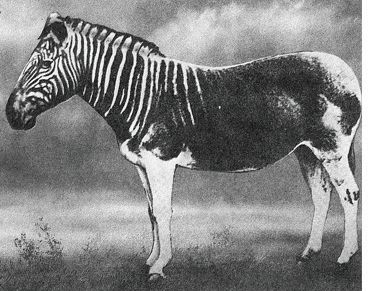
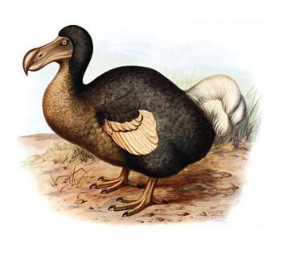
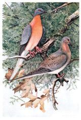
$
കൃഷിയിട-ത്മളിൺ വ്യാപക-മായി ഉപയോഗിണ്ണുവ-രുന്ന രാസവസ്തുത്ഥƒ.
$ $ ചയ്യണ്ണയിലെ നിഗമ-നത്മളോടൊ∏ം പ്രസ-‡-മായ അനുബ-'വിവ-രത്മളും ശേഖരിണ്ണ് ശാസ്ത്രലേഖനം തയാറാത്ഥി ചുവയ്യപത്രിക-യിൺ പ്രദയ്യശി-∏ിത്ഥൂ.
ഒരു പക്ഷിയും പാടുന്നി√
അ‰ുപോയ കവ്വികƒ വംശനാശം സംഭവിണ്ണ ചില ജീവിക-ളുടെ ചിത്രത്മƒ നോത്ഥൂ. മൗറീഷ്യസ് ദ്വീപിൺ സാധാര-ണമായിരുന്ന ഡോഡോ എന്ന പറത്ഥാ≥ കഴിവി-√ാസ്ഥ ഇനം പക്ഷി, ലക്ഷത്ഥണ-ത്ഥിന് എവ്വം ഉƒത്ഥൊ-≈ുന്ന കൂന്തത്മളായി അമേരിത്ഥയിലെ ആകാശ-ത്മളിൺ പറന്നിരുന്ന സഞ്ചാരിപ്രാവുകƒ, ആഫ്രിത്ഥയുടെ തെത്ഥ≥ഭാഗത്മളിൺ ഉ≠ായിരുന്ന കാന്തുസീബ്രാ ഇനമായ ക്വാങ്ങകƒ എന്നിവയെ√ാം ഭൂമിയിൺനിന്നു വിടവാത്മിയ-വരിൺ ചിലരാണ്.
ഡോഡോ
സഞ്ചാരിപ്രാവ്
ക്വാങ്ങ ചിത്രം 13.3
ഡി.ഡി.-ടി. പോല-ു≈ കീടനാശിനികƒ സൃഷ്ടിത്ഥുന്ന പാരി-ÿിതിക˛-ആരോഗ്യപ്രശ്നത്മƒ പ്രതിപാദിണ്ണ് റേണ്ണൺ കാഴ് സ ച്ച എന്ന അമേ- ര ഇത്ഥ≥ ഗവേഷക 1962 ൺ പ്രസി-≤ീകരിണ്ണ നിബ്ലബ്ദവസഗ്ലം (സൈല‚ ് സ്പ്രിങ്) എന്ന പുസ്തകം ലോകശ്ര≤ നേടുക-യു-≠ായി. ഇ≥സെക്ട് ബോംബ് എന്ന ഓമ- ന - ഏ∏- ര ഇൺ പെട്രോ- ള ഇയം ഉൺ∏- ന്ന - ത്മ - ള ഉ- മ ആയി കലയ്യസ്ഥി ഡി.ഡി.-ടി. കൃഷിയിട-ത്മളിൺ വ്യാപക-മായി സ്പ്രേ ചെയ്തതി- ല ഊടെ ചെറു- ജ - ഗ്ല ഉ- ത്ഥ - ഏളാ- എടാ∏ം പക്ഷികളും കൂന്തസ്ഥോടെ ചസ്ഥൊടുത്മുന്ന കാര്യം കാഴ്സച്ച "നിബ്ലബ് ദ - വ സഗ്ല'സ്ഥിൺ ചൂ≠ി- ത്ഥ ആ- ന്ത ഇ. മിത്ഥ കീട- ന ആ- ശ ഇ- ന ഇ- ക ളും കാ≥സറിനു വഴിവയ് - ത്ഥ ഉ- എമന്ന് പഠ- ന - റ ഇ∏ോയ്യന്തു- ക ളുടെ പി≥ബ- ല - സ്ഥ ഇൺ അവയ്യ സമയ്യഥിണ്ണു. 1972 ൺ അമേരിത്ഥയിൺ ഡി.ഡി.ടി. നിരോധിത്ഥാ≥ കാരണ-മായത് ഈ പുസ്തകമാണ്. മാരക കീട- ന ആ- ശ ഇ- ന ഇ- ക ƒ വ്യാപ- ക മായി ഉപയോഗിത്ഥ-∏െടുന്ന ഈ കാലഘന്തസ്ഥിൺ ഈ പുസ്തകം മുന്നോന്തു- വ - യ ് ത്ഥ ഉന്ന ആശ- യ - ത്മ ƒ ഏറെ പ്രസ-‡-മാണ്.
$
ഈ ജീവിക-ളുടെ വംശനാശ-സ്ഥിന് കാരണമായ സാഹച-ര്യത്മƒ എഗ്ലെ-√ാമാണ്?
$
മനുഷ്യന് ഇതിൺ എഗ്ലെന്നിലും പന്നു≠ോ?
ചയ്യണ്ണചെøൂ. നിഗമ-നത്മƒ ശാസ്ത്രപുസ്തക-സ്ഥിൺ എഴുതൂ.
അടി-ÿാന-ശാസ്ത്രം ഢകകക 189
Page 30


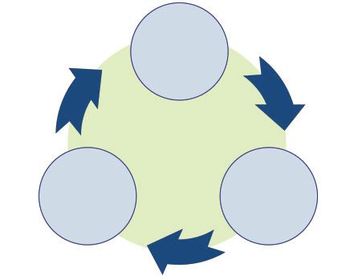
പരിര-ക്ഷിത്ഥ-∏െന്തി-√െന്നിൺ ഇവരും! വിവിധ കാരണ-ത്മളാൺ വംശനാശ-ഭീഷണി നേരിടുന്ന നിരവധി ജീവജാല-ത്മളു-≠്. ചില ഉദാഹ-രണത്മളാണ് ചുവടെ നൺകിയിരിത്ഥുന്നത്.
അശോക-മരം
മരമ-™ƒ
റെഡ് ഡാ‰ാ ബുത്ഥ് (ഞലറ ഉമമേ ആീസ) വിവിധ രാജ്യ- ത്മ - ള ഇ- ല ആയി പ്രവയ്യസ്ഥിണ്ണുവരുന്ന പരിÿിതിസംരക്ഷണ സംഘട-നവരയാട് മലബായ്യ വെരുക് യാണ് കഡഇച (കിലേൃിമശേീിമഹ ഡിശീി ളീൃ ഇീിലെൃ്മശേീി ഈള ചമൗേൃല). വംശനാശ-ഭീഷണി നേരിടുന്ന സസ്യത്മളുടെയും ജഗ്ലുത്ഥളുടെയും വിവര-ത്മƒ കഡഇച ‚െ ആഭിമുഖ്യസ്ഥിൺ സിംഹവാല≥ കുരത്മ് മലമുഴത്ഥി വേഴാബ്ബൺ ചിത്രം 13.4 ഓരോ വയ്യഷവും പന്തിക-യാത്ഥ∏െ- ട ഉന്നു. ഇതാണ് റെഡ് ഇസ്ഥരം ജീവിക-ളെത്ഥുറിണ്ണ് കൂടുതൺ വിവര-ത്മƒ ശേഖരിണ്ണ് ശാസ്ത്രഡാ‰ാ ബുത്ഥ് . ചില രാജ്യ- പുസ്തകസ്ഥിൺ എഴുതൂ. ത്മƒ സ്വഗ്ലം നില- യ ഇൺ വൈവിധ്യം സംരക്ഷിത്ഥാം തന്നെ റെഡ് ഡാ‰ാ ബുത്ഥ് പ്രകൃതിയെ സംരക്ഷിണ്ണുകൊ-≠ു≈ വികസ-നമേ നിലനിൺത്ഥുക-യു-≈ൂ. തയാ- റ ആ- ത്ഥ ഉ- ന്ന ഉ≠് . ജൈവജൈവവൈവിധ്യസ്ഥോടു≈ വിവേക-പൂയ്യണമായ സമീപനം എത്മനെവൈവിധ്യശോഷണം എത്രയായിരിത്ഥണം എന്ന് സൂചി-∏ിത്ഥുന്ന ചിത്രീക-രണം വിശക-ലനം ചെøൂ. സ്ഥോ- ള - മ ഉ- എ≠ന്ന് മന- ഇലാത്ഥി സംരക്ഷണപ്രവയ്യസ്ഥ- നിഗമ-നത്മƒ ശാസ്ത്രപുസ്തക-സ്ഥിൺ കുറിത്ഥൂ. നത്മƒ ആസൂത്രണം ചെയ്ത് നട-∏ാത്ഥുന്നതിന് റെഡ് ഡാ‰ാഅറിയുക ബുത്ഥിലെ വിവര-ത്മƒ സഹായക-മാണ്.
ജൈവവൈവിധ്യം ഉപയോഗിത്ഥുക
സംരക്ഷിത്ഥുക
ചിത്രീക-രണം 13.7
190 അടി-ÿാന-ശാസ്ത്രം ഢകകക
Page 31

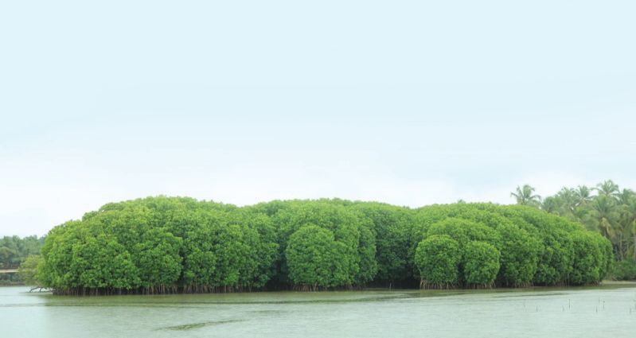
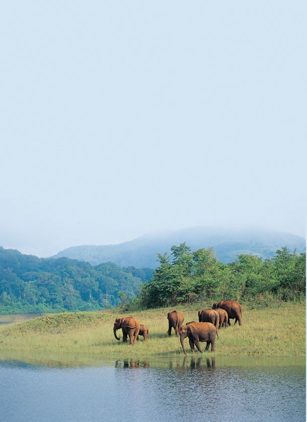
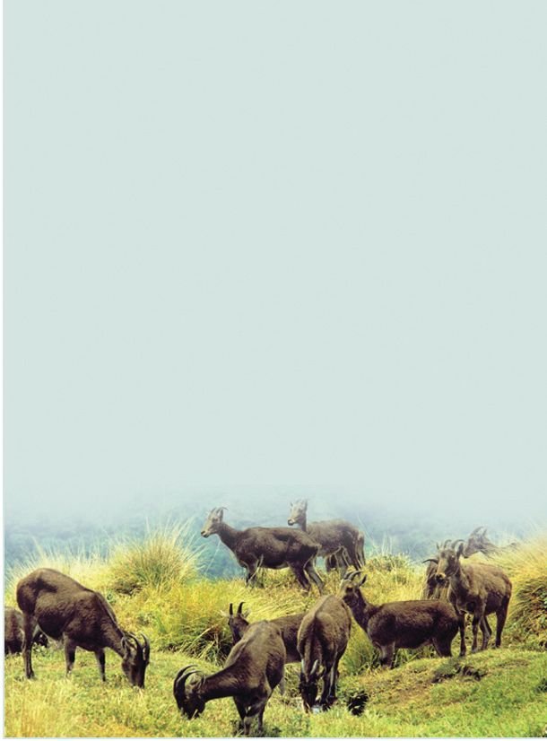
ദേശീയ˛ അഗ്ലയ്യദേശീയ തലത്മളിൺ ജൈവവൈവിധ്യസംര-ക്ഷണ-സ്ഥിനായി പ്രവയ്യസ്ഥി- ത്ഥ ഉന്ന നിര- വ ധി സംഘ- ട - ന - ക ളും നിയമസംവി- ധ ആ- ന - ത്മ ളുമു≠് . സയ്യത്ഥായ്യ ജൈവസ-ബ്ബന്നമേഖ-ലകളെ സംരക്ഷിത-പ്രദേശ-ത്മളായി പ്രഖ്യാപിണ്ണ് സംരക്ഷിത്ഥുന്നു. ജീവജാല--ത്മളെ അവയുടെ സ്വാഭാവിക ആവാസ-വ്യവ-ÿ-കളിൺസ്ഥന്നെ സംരക്ഷിത്ഥുന്ന ഇ≥സി-‰ു കച്ചസയ്യവേഷ≥ (ശിശൗേ രീിലെൃ്മശേീി) രീതിയും ജീവജാലത്മളെ അവയുടെ സ്വാഭാവിക ആവാസ-വ്യവ-ÿയ്ത്ഥ് പുറസ്ഥ് സംരക്ഷിത്ഥുന്ന എക്സി‰ു കച്ചസയ്യവേഷ≥ (ലഃശൗേ രീിലെൃ്മശേീി) രീതിയും നിലവിലു≠്. ഇസ്ഥരം സംരക്ഷണ-സംവിധാനത്മ-ƒത്ഥ് ചില ഉദാഹ-രണ-ത്മƒ പരിച-യ-∏െടൂ.
ഇ≥സി-‰ു കച്ചസയ്യവേഷ≥
വന്യജീവിസന്നേത-ത്മƒ
നാഷണൺ പായ്യത്ഥുകƒ
(ണശഹറ ഘശളല ടമിരൗേമൃ്യ)
(ചമശേീിമഹ ജമൃസ)െ
ആവാ- സ - വ ്യ- വ - ÿ - ക ളെ പരി- ര ക്ഷിണ്ണുകൊ≠് വന്യജീവിക-ളുടെ വംശനാശം തടയാനായി പ്രഖ്യാപിത്ഥ-∏െന്തിന്തു≈ വനമേഖ-ലക-ളാണിവ. പേ∏ാറ, പെരിയായ്യ, വയനാട് തുടത്മിയവ കേരളസ്ഥിലെ വന്യജീവിസന്നേത-ത്മƒത്ഥ് ഉദാഹ-രണ-ത്മളാണ്.
വന്യജീവിസംരക്ഷണസ്ഥോടൊ∏ം ഒരു മേഖ- ല - യ ഇലെ ചരി- ്രത- സ ് മ ആ- ര - ക - ത്മ ƒ, പ്രകൃതിവിഭവ-ത്മƒ, ഭൗമസ-വിശേഷ-തകƒ എന്നിവകൂടി സംരക്ഷിത്ഥുന്നതിനായി രൂപീക-രിത്ഥ-∏െന്തവ-യാണ് നാഷണൺ പായ്യത്ഥു- ക ƒ. ഇരവികുളം, സൈല‚ ്വാലി, ആനമുടിണ്ണോല, മതികെന്താ≥ചോല, പാബ്ബാടുംചോല എന്നിവയാണ് കേരള-സ്ഥിലെ നിലവിലു≈ നാഷണൺ പായ്യത്ഥുകƒ.
കΩ്യൂണി‰ി റിസയ്യവുകƒ (ഇീാൗിശ്യേ ഞലലെൃ്ല)െ പൊതു- ജ ന പന്നാ- ള ഇ- സ്ഥ - ഏസ്ഥാടെ സംര- ക്ഷ ഇ- ത്ഥ - എ∏- ട ഉ- ന്ന പ്രദേ- ശ - ത്മ - ള ആണ് കΩ്യൂണി‰ി റിസയ്യവുകƒ. ജനവാസ-കേ-μ്രത്മƒത്ഥിട-യിലെ പരി-ÿിതിപ്രാധാന്യമേറിയ പ്രദേശ-ത്മളാണിവ. മല-∏ുറം ˛ കോഴിത്ഥോട് ജി√-കളിലായി ÿിതി ചെøുന്ന കടലു≠ി കΩ്യൂണി‰ി റിസയ്യവ് ഇതിന് ഉദാഹരണ-മാണ്.
അടി-ÿാന-ശാസ്ത്രം ഢകകക 191
Page 32

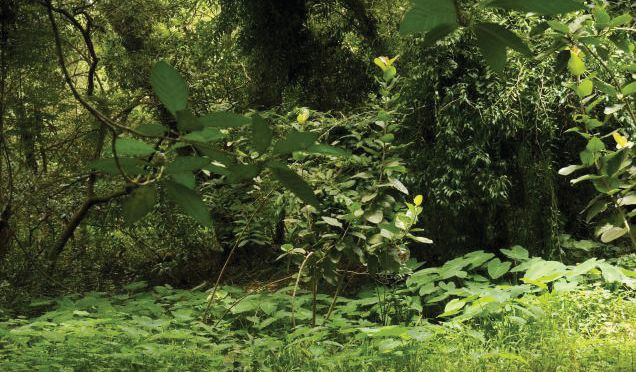
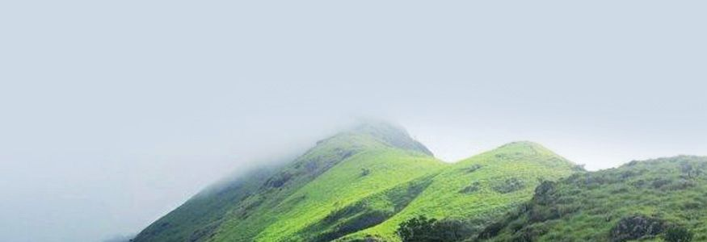
ബയോസ്ഫിയയ്യ റിസയ്യവുകƒ (ആശീുെവലൃല ഞലലെൃ്ല)െ ലോകസ്ഥിലെ പ്രധാന-∏െന്ത ആവാസ-വ്യവ-ÿ-കളെയും ജൈവവൈവിധ്യസ്ഥെയും ജനിത-കസ്രോത- ഉക-ളെയും സംരക്ഷിത്ഥുക എന്ന ഉദ്ദേശ്യസ്ഥോടെ ÿാപിത്ഥ∏െന്ത- വിശാല-മായ ഭൂപ്രദേശമാണിത്. നീലഗിരി, അഗസ്ത്യമല എന്നീ ബയോസ്ഫിയയ്യ റിസയ്യവുകളിൺ കേരള-സ്ഥിലെ പ്രദേശ-ത്മƒകൂടി ഉƒ∏െന്തിരിത്ഥുന്നു.
കാവുകƒ (ടമരൃലറ ഴൃീ്ല)െ മനു- ഷ ്യ- വ ആസപ്രദേ- ശ - ത്മ - ള ഇൺ സംര- ക്ഷ ഇ- ത്ഥ - എ∏ന്തുവരുന്ന വിസ്തൃതി കുറ™ ജൈവവൈവിധ്യമേഖ-ലയാണ് കാവുകƒ. ജീവിത-സാഹ-ചര്യത്മളിൺ വന്ന മാ‰-ത്മളുടെ ഭാഗമായി അമൂല്യജൈവ-സബ്ബസ്ഥായിരുന്ന കാവുകƒ പലതും നാമാവ-ശേഷ-മായി. ഏതാനും കാവുകƒ മാത്രമേ ഇന്നവശേഷിത്ഥുന്നു-≈ൂ. പ്രദേശസ്ഥെ ജലസംര-ക്ഷണ-സ്ഥിൺ കാവുക-ളുടെ പന്ന് നിസ്തുല-മാണ്.
ഇത്ഥോള-ജിത്ഥൺ ഹോന്ത് സ്പോന്തുകƒ (ഋരീഹീഴശരമഹ ഒീുെേീ)െേ തദ്ദേശീയ-മായ ധാരാളം സ്പീഷീസുകƒ ഉƒത്ഥൊ-≈ുന്നതും ആവാസനാശഭീഷണി നേരിടുന്നതുമായ ജൈവവൈവിധ്യമേഖ-ലക-ളാണ് ഇവ. അതീവ പരി-ÿിതിപ്രാധാന്യമു≈ ജൈവസ-ബ്ബന്ന മേഖലയാണ് ഓരോ ഹോന്ത്സ്പോന്തും. ലോക- സ്ഥ ആ- ക - മ ആ- ന - മ ഉ≈ മു- ∏ സ്ഥിനാല് ഹോന്ത്സ്പോന്തുക-ളിൺ മൂന്നെവ്വം ഇഗ്ല്യയിലാണ്. പ›ിമഘ-ന്തം, വടത്ഥുകിഴത്ഥ≥ ഹിമാലയം, ഇഗ്ലോ- ˛ - ബ യ്യമ മേഖല എന്നിവയാണ-വ.
ഇ≥സി‰ു കച്ചസയ്യവേ- ഷ - ന ഉ- മ ആയി ബ'- എ∏ന്തു നൺകി- യ ഇ- ര ഇ- ത്ഥ ഉന്ന ചിത്രീക-രണം പൂയ്യസ്ഥിയാത്ഥൂ. ഇ≥സി‰ു കച്ചസയ്യവേഷ≥
വന്യജീവിസ-ന്നേതം $ ആവാസ-വ്യവ-ÿകളുടെ പരിര-ക്ഷ. $ ഉദാ: വയനാട്
നാഷണൺ പായ്യത്ഥുകƒ $ $ ഉദാ: ................................
കΩ്യൂണി‰ി റിസയ്യവ് $ പൊതുജ-നപ-ന്നാളിസ്ഥസ്ഥോടെ സംരക്ഷണം. $ ഉദാ: ................................
ചിത്രീക-രണം 13.8
192 അടി-ÿാന-ശാസ്ത്രം ഢകകക
ബയോസ്ഫിയയ്യ റിസയ്യവ് $ $ ഉദാ: അഗസ്ത്യമല
Page 33
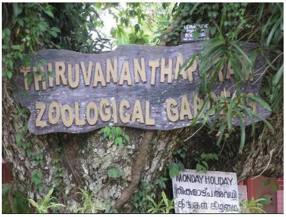
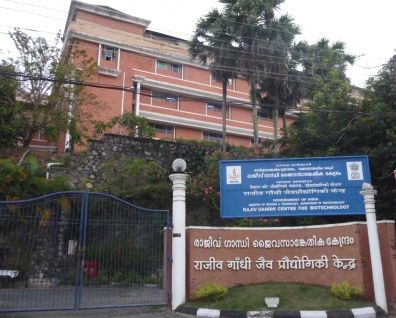
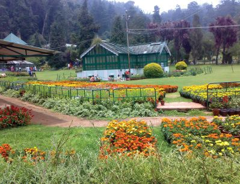
എക്സി‰ു കച്ചസയ്യവേഷ≥
സുവോളജിത്ഥൺ ഗായ്യഡനുകƒ (ദീഹീഴശരമഹ ഴമൃറലി)െ വ്യത്യസ്ത ഇനത്മളിൺ∏െന്ത ജഗ്ലുത്ഥളെ പ്രതേ്യക-മായി പായ്യ∏ിണ്ണ് പരിപാലിത്ഥുകയും വംശവയ്യധന-വിനുവേ≠ സാഹചര്യത്മƒ ഒരുത്ഥുകയും ചെøുന്ന സംരക്ഷണ കേμ്രത്മളാണ് സുവോള-ജിത്ഥൺ ഗായ്യഡനുകƒ. വനമേഖ-ലയിൺ വംശനാശം സംഭവിണ്ണ ജീവിക-ളുടെ (ഋഃശേിര ഏശി ംശഹറ) സംരക്ഷണ--കേμ്രം കൂടിയാണ് ഇവിടം. കേരള-സ്ഥിൺ തിരുവ-നഗ്ലപുരം, തൃശൂയ്യ എന്നിവിട-ത്മളിൺ സുവോള-ജിത്ഥൺ ഗായ്യഡ--നുക-ളു≠്.
ബൊന്താണിത്ഥൺ ഗായ്യഡനുകƒ (ആീമേിശരമഹ ഴമൃറലി)െ വൈവിധ്യമായ്യന്ന സ്പീഷീസുക-ളിൺ∏െന്ത അപൂയ്യവവും പ്രധാന-∏െന്തതുമായ സസ്യത്മളെ സംരക്ഷിത്ഥുന്ന വിശാല-മായ ഗവേഷണകേμ്രത്മളാണിവ. ഒന്തുമിത്ഥ സസ്യത്മളെയും തിരിണ്ണറിയാനും അവയെത്ഥുറിണ്ണ് കൂടുതൺ വിവര-ത്മƒ അറിയാനും ബൊന്താണിത്ഥൺ ഗായ്യഡ≥ സμയ്യശിത്ഥുന്നതിലൂടെ നമുത്ഥ് കഴിയും. തിരുവനഗ്ലപുരം പാലോട് ജവഹയ്യലാൺ നെഹ്റു ട്രോ∏ിത്ഥൺ ബൊന്താണിത്ഥൺ ഗായ്യഡ≥ ആ‚ ് റിസയ്യണ്ണ് ഇ≥ല്ലി‰്യൂന്ത് (ഖചഠആഏഞക), കോഴിത്ഥോട് ഒളവ-വ്വയിലെ മലബായ്യ ബൊന്താണിത്ഥൺ ഗായ്യഡ≥ (ങആഏ) എന്നിവ ഉദാഹ-രണത്മളാണ്.
ഗഠ-485-2/ആമശെര ടരശ. 8(ങ) ഢീഹ-2
ജീ≥ബാന്നുകƒ (ഏലില ആമിസ)െ വിസ്ഥുകƒ, ബീജത്മƒ മുതലായവ ശേഖരിത്ഥാനും ദീയ്യഘകാല-സ്ഥേത്ഥു സംരക്ഷിത്ഥാനുമു≈ സംവിധാന-ത്മളു≈ ഗവേഷണകേμ്രത്മളാണിവ. ആവശ്യമായ അവസ-രത്മളിൺ ഇവ ഉപയോഗിണ്ണ് ജീവികളെ പുനഃസൃഷ്ടിത്ഥാനും കഴിയും. തിരു- വ - ന - ഗ്ല - പ ഉ- ര സ്ഥെ രാജീ- വ ് ഗ ആ'ി സെ‚യ്യ ഫോയ്യ ബയോടെക്നോളജി (ഞഏഇആ) ഇതിനൊരുദാഹ-രണമാണ്.
സൂചക-ത്മƒ കഠ @ ടരവീഹ ഋറൗയൗിൗേ വിൺ ടരവീഹ ഞലീൗൃരല എലെ "വന്യജീവിസംര-ക്ഷണം' എന്ന ഭാഗം കാണുക.
$
എക്സി‰ു കച്ചസയ്യവേഷ≥ രീതിയുടെ സാധ്യത-കƒ എഗ്ലെ√ാം?
$
ജീ≥ബാന്നുക-ളുടെ പ്രാധാന്യമെഗ്ല്?
അടി-ÿാന-ശാസ്ത്രം ഢകകക 193
Page 34

പരി-ÿിതിസംരക്ഷണ പ്രവയ്യസ്ഥന-ത്മƒ രൂപ-∏െടുസ്ഥാനും ഏകോപി-∏ിത്ഥാനുമായി സയ്യത്ഥായ്യതല- സ്ഥ ഇലും അ√ാ- എതയും നിര- വ ധി സംഘ- ട - ന - ക ƒ പ്രവയ്യസ്ഥിത്ഥുന്നു-≠്. ദേശീയതലസ്ഥിലും അഗ്ലയ്യദേശീയതലസ്ഥിലും പ്രവയ്യസ്ഥിത്ഥുന്ന ചില സംഘട-നകളെയും ÿാപന-ത്മളെയും പരിച-യ-∏െടൂ.
ണണഎ
കഡഇച (കിലേൃിമശേീിമഹ ഡിശീി ളീൃ ഇീിലെൃ്മശേീി ഈള ചമൗേൃല)
ജൈവവൈവിധ്യസംരക്ഷണം എന്ന മുഖ്യലക്ഷ്യ- ഏസ്ഥാടെ സ്വി‰്സയ്യല‚ ് ആÿാന-മായി പ്രവയ്യസ്ഥി- ത്ഥ ഉന്ന സ്വതഗ്ല്ര സംഘട-നയാണ് കഡഇച .
(ണീൃഹറ ണശറല എൗിറ ളീൃ ചമൗേൃല)
ജൈവവൈവിധ്യസംരക്ഷണം, പ്രകൃതിവിഭവത്മളുടെ ചൂഷണവും മലിനീക-രണവും തടയൺ തുട- ത്മ ഇ- യ - വ - യ ആണ് ണണഎ ‚െ ലക്ഷ്യത്മƒ. ഈ സംഘ- ട - ന - യ ഉ- എടയും ആÿാനം സ്വി‰്സയ്യല‚ ് ആണ്.
പരി-ÿിതിസംരക്ഷണ-സ്ഥിനായി പ്രവയ്യസ്ഥിത്ഥുന്ന സംഘട-നകളും ÿാപനത്മളും നΩുടെ നാന്തിലുമു-≠√ോ. അവയെത്ഥുറിണ്ണ് അനേ്വഷിത്ഥൂ, വിവര-ത്മƒ ശേഖരിത്ഥൂ. പരി-ÿിതി സംരക്ഷിത്ഥാ≥ എനിത്ഥെഗ്ലെ√ാം ചെøാനാവും?
$ വൃക്ഷസ്ഥൈകƒ നന്തു പരിപാലിത്ഥുക. $ വനത്മളെത്ഥുറിണ്ണും പരി-ÿിതിയെത്ഥുറിണ്ണും പരമാവധി നേരിന്തറിയാ≥ ശ്രമിത്ഥുക. മന- ഇലാത്ഥിയ അറിവുകƒ പന്നുവയ്ത്ഥുക. $ പരിസരം ശുചിയായി സൂക്ഷിത്ഥുക. $ ബോധ- വ ൺത്ഥ- ര ണ പരി- പ ആ- ട ഇ- ക - ള ഇൺ പന്നാളിയാവുക. $ $
194 അടി-ÿാന-ശാസ്ത്രം ഢകകക
Page 35

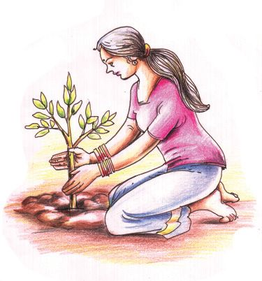

നΩുടെ വനത്മളെ അറിയാ≥ കേരള-സ്ഥിലെ വനം-˛-വന്യജീവി വകു-∏ിനു കീഴിൺ മു∏- ഏതാളം കേμ്ര- ത്മ - ള ഇ- ല ആയി പ്രകൃതിപഠ- ന - ക ്യാ- ബ്ബ ഉ- ക ƒ നടസ്ഥി വരുന്നു≠്. ഏകദിന-˛-ത്രിദിന ക്യാബ്ബുക-ളിലൂടെ സാധാര-ണഗ-തിയിൺ സാധ്യമ-√ാസ്ഥ വനാഗ്ലര യാത്രക-ളിൺ പന്നാളിയാകാനു≈ അവസരം ലഭിത്ഥുന്നു. സ്കൂളിലെ പരി-ÿിതി ക്ല∫ി‚െ ആഭി- മ ഉ- ഖ ്യ- സ്ഥ ഇൺ ബ'- എ∏ന്ത വൈൺഡ് എലെഫ് വായ്യഡന് അപേക്ഷ നൺകിയാൺ നിത്മƒത്ഥും ഈ ക്യാബ്ബിൺ പന്നെടുത്ഥാ≥ കഴിയും. കാടിനെ അടുസ്ഥറിയാനു≈ ഈ അവസരം പ്രയോജ-ന-∏െടുസ്ഥുമ-√ോ.
ജൈവസ-ബ്ബസ്ഥു പരിര-ക്ഷിത്ഥേ-≠തും വരുംതലമുറ-യ്ത്ഥായി നിലനിയ്യസ്ഥേ-≠തും നΩുടെ കടമയാണ്. അതു തിരിണ്ണറി™് പ്രവയ്യസ്ഥിണ്ണി-√െന്നിൺ നΩുടെ നിലനിൺ∏ുതന്നെ അസാധ്യമാകും.
പ്രധാന പഠന-നേന്തത്മളിൺ പെടുന്നവ $
ആവാസവ്യവ-ÿ-യിലെ ജീവികളെ ഉƒ∏െടുസ്ഥി പോഷണ-തല-ത്മƒ ചിത്രീക-രിത്ഥാ≥ കഴിയുന്നു.
$
ജീവികƒ തΩിലു≈ വിവിധ പ്രതിവയ്യസ്ഥനത്മƒ ആവാസ-വ്യവ-ÿയുടെ നിലനിൺ∏ിനെ സ്വാധീനിത്ഥുന്നത് എത്മനെയെന്ന് വിശദീകരിത്ഥാ≥ കഴിയുന്നു.
$
ജൈവവൈവിധ്യം എഗ്ലാണെന്ന് വിശദീക-രിത്ഥാ≥ കഴിയുന്നു.
$
ജൈവ- എവെ- വ ഇധ്യശോഷ- ണ - സ്ഥ ഇ‚െ കാര- ണ ത്മƒ ക≠െസ്ഥി പരിഹാരത്മƒ നിയ്യദേശിത്ഥാ≥ കഴിയുന്നു.
$
ജൈവവൈവിധ്യം പരിര-ക്ഷിത്ഥേ≠-തി‚െ പ്രാധാന്യം തിരിണ്ണറി-™് സംരക്ഷണ-പ്രവയ്യസ്ഥന-ത്മളിൺ ഏയ്യ∏െടുന്നു.
വിലയിരുസ്ഥാം 1.
സസ്യ-π-വകം ˛ ജഗ്ലു-π-വകം ˛ മ'്യം ˛ സീൺ ˛ സ്രാവ് മ. ഈ ആഹാരശ്യംഖല-യിലെ ദ്വിതീയ ഉപഭോ-‡ാവ് എത്രാമസ്ഥെ
പോഷണതലസ്ഥിലാണ് ഉƒ∏െടുന്നത്? യ. മൂന്നാം പോഷണതലസ്ഥിലെ ജീവി ര≠ാം പോഷണതലസ്ഥിൺ
വരസ്ഥത്ഥവിധം ആഹാരശ്യംഖല മാ‰ി എഴുതുക.
അടി-ÿാന-ശാസ്ത്രം ഢകകക 195
Page 36
2.
ചുവടെ നൺകിയിരിത്ഥുന്നവയിൺ ഒ‰-∏െന്തതു ക≠െസ്ഥുക. അതിനു≈ ന്യായീക-രണ-മെഗ്ല്? മ. ക്വാങ്ങ, മലബായ്യ വെരുക്, വരയാട്, സിംഹവാല≥ കുരത്മ്
3.
യ. ഇരവികുളം, മതികെന്താ≥ചോല, പെരിയായ്യ, സൈല‚ ്വാലി തന്നിന്തു≈ പ്രസ്താവ-നകƒ പരിശോധിണ്ണ് തെ‰ു≠െന്നിൺ തിരുസ്ഥിയെഴുതുക. മ. റെഡ് ഡാ‰ാ ബുത്ഥിൺ വംശനാശം സംഭവിണ്ണ ജീവികƒ ഉƒ∏െന്തിരിത്ഥുന്നു. യ. ജൈവവൈവിധ്യസംര-ക്ഷണം ലക്ഷ്യമാത്ഥി പ്രവയ്യസ്ഥിത്ഥുന്ന ഒരു സംഘട-നയാണ് ണണഎ. ര. ജീ≥ബാന്നുകƒ എന്നിവ ഇ≥സി‰ു കച്ചസയ്യവേഷ≥ രീതിയിൺ ഉƒ∏െടുന്നു.
തുടയ്യപ്രവയ്യസ്ഥനത്മƒ 1.
നിത്മളുടെ ചു‰ുപാടുമു≈ ജഗ്ലുസസ്യജാലത്മƒ തിരിണ്ണറി™് പ്രാദേശിക ജൈവവൈവിധ്യ രജില്ലയ്യ തയാറാത്ഥുക.
2.
ജൈവവൈവിധ്യവുമായി ബ'-െ∏ന്ത് ശേഖരിണ്ണ വിവര-ത്മളും ചിത്രത്മളും തയാറാത്ഥിയ ലേഖന-ത്മളും ഉƒ∏െടുസ്ഥി സയ≥സ് ജേണൺ തയാറാത്ഥുക.
3.
ജൈവവൈവിധ്യസംരക്ഷണ-സ്ഥി‚െ പ്രാധാന്യം ബോധ്യ-∏െടുസ്ഥുന്ന പോല്ലറുകƒ നിയ്യമിണ്ണ് ക്ലാസിൺ പ്രദയ്യശി-∏ിത്ഥുക.
196 അടി-ÿാന-ശാസ്ത്രം ഢകകക